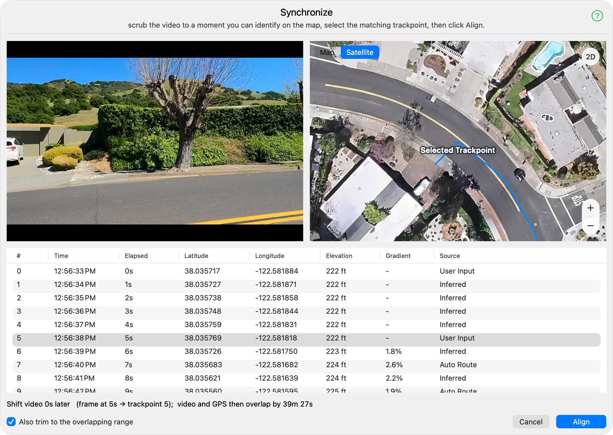

This panel registers the video against the GPS track using a single matching moment.
Scrub the video to a frame you can identify on the map, select the trackpoint at that spot, then click Align.
Because both timelines run at real time, that one correspondence fixes the video's time offset.
Optionally trim the video and track down to the range they share once aligned.